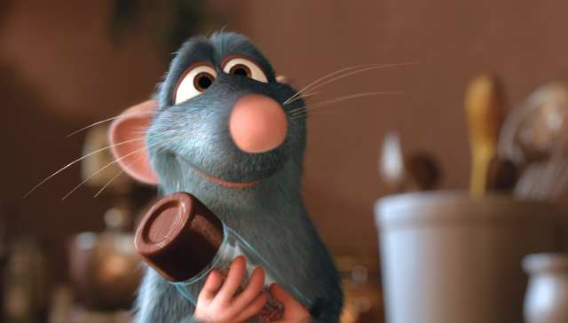

Quotes
"If you are what you eat, then I only want to eat the good stuff."
Remy is a rat who simply adores food and its quality. He befriends a spectral representation of his hero, the late Auguste Gusteau. Due to his love for food, he has a strong sense of smell, and his father Django appoints him as poison-checker amongst the rat's clan after Remy stops him from eating a poisoned apple core. Remy's gift with food allows him to be able to identify the different ingredients in a dish, and he always tries his best to make good, high-quality food. He also has an interest in humans, due to how they prepare food in such an exquisite manner, and soon becomes quite close to one particular human, Alfredo Linguini, who affectionately calls him "Little Chef" and cannot cook.
He is not a typical rat, and his personality is more like that of a human, as he walks on two feet instead of four. What he thinks of his talent is a bit of modesty, as shown when Linguini asked him if he could actually cook. Towards the fact that he is not really a typical rat, this concerns his father excessively, and always ends up in argument with him to do with his ways.
His overall dream is to become a chef, and he is always tempted to cook wherever he finds what he needs. When he finds Linguini and realizes he can control his actions with his hair, he immediately cooks food of extremely high-quality, hiding under Linguini's toque, and everyone buys his dishes by asking for the "Special Order".
"If you are what you eat, then I only want to eat the good stuff."
Artistic, passionate, creative, intuitive, imaginative, intelligent, ambitious, brave, friendly, hygienic, kind, strong-willed, idealistic, optimistic, well-mannered